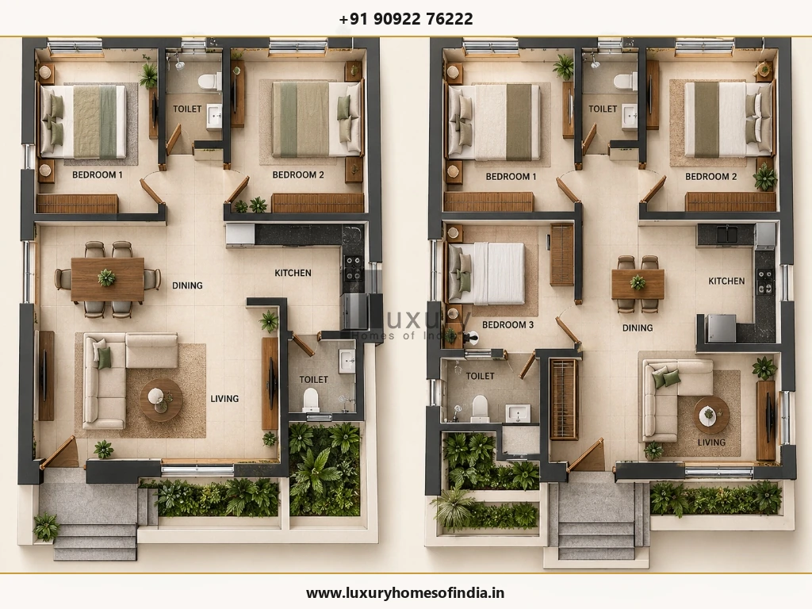
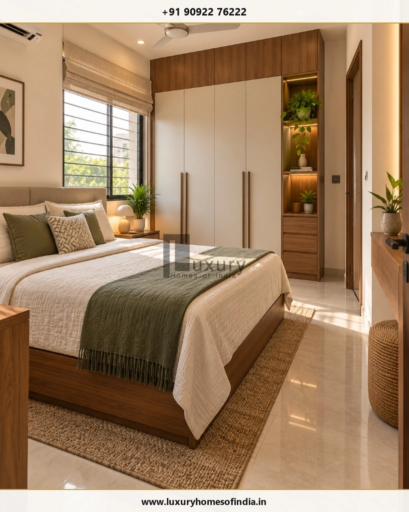
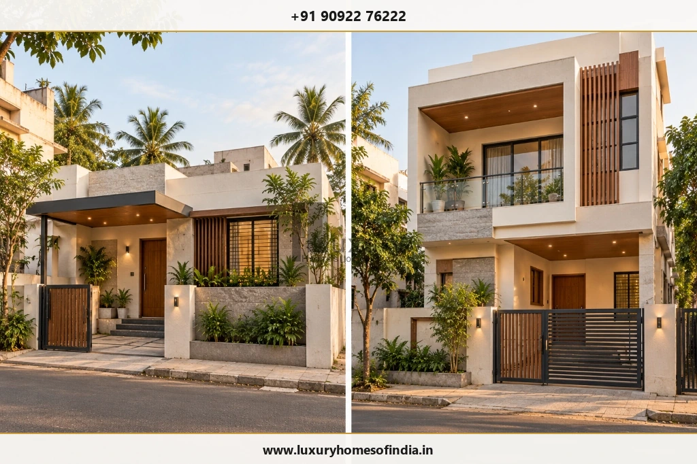

Executive Summary for Homeowners
A well-designed 1,200 sq. ft. house can accommodate two or three bedrooms, a functional kitchen, comfortable living spaces and essential storage when the layout is planned around the family's needs. For many homeowners, a 2BHK offers more generous bedrooms and shared spaces, while a 3BHK prioritises an additional bedroom through more compact planning. The best floor plan depends on whether 1,200 sq. ft. refers to the plot area or the total built-up area, the shape of the site, parking requirements, family size and the number of floors permitted.
In Chennai, these decisions should be made alongside site measurements and the applicable building approval requirements. Before choosing a layout, compare how the rooms will actually function with furniture in place, how circulation will work and whether the design leaves enough space for bathrooms, storage and utility needs. This guide explains the trade-offs between 2BHK and 3BHK designs, illustrates room-planning options and outlines the checks to complete before asking an architect to prepare a site-specific plan.

1. What Does 1,200 Sq. Ft. Mean in a House Plan?
Before comparing layouts, establish what the measurement represents. The difference affects how many rooms can fit and how much usable space remains.
- Plot area: The total area of the land. A 1,200 sq. ft. plot does not automatically allow a 1,200 sq. ft. ground-floor footprint.
- Built-up area: The constructed floor area measured according to the applicable measurement convention. Confirm what the stated figure includes.
- Carpet or usable internal area: The space available within the relevant internal boundaries, as defined for the measurement being used. It should not be treated as interchangeable with plot or built-up area.
- Combined floor area: The total across two or more floors, where applicable. A 1,200 sq. ft. house spread over two floors has a different layout from a single-floor house of the same total area.
For example, a 30 ft × 40 ft plot has a gross land area of 1,200 sq. ft. Its permissible building footprint depends on the site and the applicable planning rules.
Planning principle: Confirm the plot dimensions, road access, boundaries, setbacks and permissible development before selecting a floor plan.
2. Should You Choose a 2BHK or 3BHK?

Neither layout is automatically better. The right choice depends on whether your priority is room comfort or bedroom count.
| Decision factor | 2BHK | 3BHK |
|---|---|---|
| Bedrooms | Two | Three |
| Living and dining | More flexibility for shared space | Often needs tighter planning |
| Storage | More opportunity for wardrobes and cabinets | Requires careful storage allocation |
| Family needs | Couples, small families or households prioritising room comfort | Families needing a separate child, parent, guest or work room |
| Future flexibility | Space may be available for a study or multipurpose area | Extra bedroom provides another dedicated room |
| Main trade-off | No third dedicated bedroom | Smaller rooms or shared areas may be necessary |
Choose a 2BHK if comfortable bedrooms, storage, a practical dining area and easy circulation matter more than a third bedroom.
Consider a 3BHK if the additional bedroom serves a clear purpose and the resulting room sizes remain practical.
A useful test is to list the activities each room must support. A bedroom that doubles as a study, for example, needs enough space for both sleeping and working without blocking access to the wardrobe.
3. Planning a 1,200 Sq. Ft. 2BHK
A 2BHK can be a useful starting concept when the available built-up area is approximately 1,200 sq. ft. and the household wants a comfortable balance between private and shared spaces.
Illustrative room-planning schedule
| Space | Example dimensions | Example area |
|---|---|---|
| Living room | 14 ft × 15 ft | 210 sq. ft. |
| Dining area | 9 ft × 10 ft | 90 sq. ft. |
| Main bedroom | 12 ft × 13 ft | 156 sq. ft. |
| Second bedroom | 10 ft × 12 ft | 120 sq. ft. |
| Kitchen | 8 ft × 10 ft | 80 sq. ft. |
| Attached bathroom | 5 ft × 7 ft | 35 sq. ft. |
| Common bathroom | 5 ft × 7 ft | 35 sq. ft. |
| Utility area | 5 ft × 6 ft | 30 sq. ft. |
These examples total 756 sq. ft. for the listed spaces. The remaining area cannot simply be treated as spare room area: walls, circulation, storage, stairs where applicable and other requirements must also be accommodated. The dimensions are illustrative, not a measured or approved plan.
How to organise the layout:
- Position the living area near the entrance while preserving privacy where possible.
- Connect the dining area to the kitchen to reduce unnecessary movement.
- Place bedrooms away from the busiest common areas where the site allows.
- Make the common bathroom accessible without requiring visitors to pass through a bedroom.
- Plan wardrobes, door swings and bed clearances before fixing room dimensions.
- Locate the utility area near the kitchen or another suitable service zone.

What to Check:
Can a bed, wardrobe and bedside table fit without obstructing the door? Can two people use the kitchen comfortably? Is there a practical location for cleaning equipment and laundry? These questions are more useful than judging a plan by room labels alone.
4. Planning a 1,200 Sq. Ft. 3BHK
A 3BHK prioritises three separate bedrooms. Whether it works comfortably depends on the actual available floor area, room proportions, bathroom requirements and circulation.
Illustrative room-planning schedule
| Space | Example dimensions | Example area |
|---|---|---|
| Combined living and dining | 12 ft × 15 ft | 180 sq. ft. |
| Main bedroom | 11 ft × 12 ft | 132 sq. ft. |
| Bedroom 2 | 10 ft × 10 ft | 100 sq. ft. |
| Bedroom 3 | 9 ft × 10 ft | 90 sq. ft. |
| Kitchen | 8 ft × 9 ft | 72 sq. ft. |
| Bathroom 1 | 5 ft × 7 ft | 35 sq. ft. |
| Bathroom 2 | 5 ft × 7 ft | 35 sq. ft. |
These listed spaces total 644 sq. ft. They do not constitute a complete house plan or establish that the layout will fit a particular site. Wall thicknesses, passages, storage, service areas and other requirements still need to be planned.
How to make the third bedroom practical:
- Give each bedroom a defined purpose before allocating dimensions.
- Use a combined living-dining arrangement if it suits the family's lifestyle.
- Check whether the third bedroom can accommodate its intended furniture and storage.
- Coordinate bathroom locations with plumbing and drainage routes.
- Avoid narrow passages and awkward door conflicts merely to preserve a third bedroom label.
- Assess daylight, ventilation and privacy for all three bedrooms.
The key is not to maximise the number of rooms at any cost. It is to ensure that each room is genuinely usable.
5. Can a 1,200 Sq. Ft. Plot Accommodate a 3BHK in Chennai?
It may be possible in some configurations, but the answer cannot be determined from plot area alone.
A 1,200 sq. ft. plot has a gross land area of 1,200 sq. ft. The buildable footprint and permissible floor area depend on the site's dimensions, location, road conditions, setbacks and the applicable development regulations.
A single-floor 3BHK and a two-floor house are different design propositions. A G+1 concept could distribute the bedrooms between floors, but the staircase, structure, circulation and permitted development must all be considered.
For a preliminary design discussion, gather:
- The site dimensions and a reliable boundary survey.
- The property location and road width.
- Any existing approval or relevant site documentation.
- Your preferred number of bedrooms and bathrooms.
- Car and two-wheeler parking needs.
- Whether future expansion is important.
Check the current rules and approval process with the relevant authority. For Chennai, the Greater Chennai Corporation Town Planning resources and CMDA website are useful starting points. The applicable authority and requirements should be confirmed for the specific property.
Do not finalise a room layout on the assumption that the entire plot can be built over.
6. Single-Floor House or G+1 Design?

| Consideration | Single-floor layout | G+1 layout |
|---|---|---|
| Bedroom arrangement | All bedrooms on one level | Bedrooms may be distributed across floors |
| Staircase | No inter-floor staircase | Requires space for a staircase |
| Accessibility | Avoids routine internal stairs | Upper-floor access involves stairs unless another solution is designed |
| Privacy | Shared floor level | Greater separation between floors may be possible |
| Structure and services | Designed for the proposed single-floor building | Requires coordinated design for the full building and future loads |
| Future expansion | Depends on the original design | Must be planned, engineered and approved as applicable |
A single-floor home may suit a family that values easier movement between rooms. A G+1 layout may be worth exploring when the site footprint is limited and the required floor area can be accommodated across floors.
Neither option is automatically cheaper. Compare complete, like-for-like scopes, including structural work, stairs, services, finishes and external works.
If a future first floor is planned, discuss the full structural design with the architect and structural engineer before construction starts.
7. How Should You Plan Parking?
Parking affects the usable site area, the entrance and the location of structural elements. It should be included in the first planning exercise rather than added after the rooms have been arranged.
Consider:
- The dimensions of the vehicle you expect to park.
- Gate width, turning movement and access from the road.
- A safe pedestrian route to the entrance.
- Column and staircase positions.
- Two-wheeler parking and household equipment.
- Applicable parking and development requirements.
If the plot is compact, test the vehicle movement with the actual site dimensions. A parking bay that fits on paper may not provide sufficient room to enter, exit or open vehicle doors comfortably.
Keep the difference between plot area and built-up area clear when evaluating the options.
8. How to Make a 1,200 Sq. Ft. House Feel More Spacious
Good planning can improve the experience of a home without increasing its floor area.
Connect shared spaces thoughtfully
A combined living-dining arrangement may reduce the need for separate circulation zones. Maintain enough room for dining chairs, walking paths and everyday activities.
Integrate storage early
Plan wardrobes, kitchen cabinets and utility storage before deciding final room dimensions. Built-in storage can reduce clutter, but doors and drawers still require operating space.
Use daylight and ventilation effectively
Window placement should consider orientation, privacy, shading, airflow and the surrounding buildings. More glass is not automatically better, particularly where heat gain or privacy is a concern.
Keep circulation efficient
Reduce unnecessary corridors without compromising access, safety or clearances. Space efficiency comes from the relationship between rooms, not from making every passage as narrow as possible.
Scale furniture to the room
Draw beds, sofas, dining tables and wardrobes to realistic dimensions. This reveals potential conflicts before the layout is finalised.
Coordinate finishes and lighting
Consistent finishes, well-positioned lighting and a considered colour palette can create visual continuity. A luxurious appearance depends on proportion, detailing and quality of execution, not simply expensive materials.
9. Should Vastu Influence Your Floor Plan?
If Vastu is important to your family, include those preferences in the design brief from the beginning.
Some homeowners have preferences for the entrance, kitchen, bedrooms or pooja space. These can be discussed alongside the plot orientation and household requirements. No single arrangement will suit every site and family.
The final plan must still address structural safety, access, daylight, ventilation, plumbing, drainage and applicable building requirements. Avoid making unreviewed structural changes or accepting an impractical layout solely to accommodate a preference.
10. Common Mistakes to Avoid
- Confusing plot area with built-up area: Confirm the site and proposed construction measurements before comparing plans.
- Trying to fit too many rooms: Extra bedrooms are not useful if they cannot accommodate the intended furniture and circulation.
- Ignoring furniture placement: Test beds, wardrobes, kitchen counters and dining furniture in the proposed layout.
- Leaving utility needs until later: Laundry, cleaning equipment, storage and service access require planned locations.
- Adding a staircase at the last minute: It can materially change the available room arrangement.
- Ignoring local approval requirements: Have the proposed design reviewed against the rules applicable to the property.
- Changing structural elements without engineering review: Columns, beams, foundations and other structural components must not be altered casually.
- Treating an illustrative plan as a construction drawing: Concept layouts help with discussion; construction requires the appropriate professionally prepared and approved documentation.
11. What Does It Cost to Build a 1,200 Sq. Ft. House in Chennai?
The cost depends on the actual built-up area, structural design, material specifications, finish level, labour, site conditions and the scope included in the contract.
A useful preliminary estimate starts with the confirmed construction area multiplied by a current, comparable rate. It should then account for items that may not be included in the headline rate, such as approvals, professional fees, compound walls, water storage, external utilities, interiors and landscaping.
Before comparing quotations, ask each contractor to specify:
- The area used for the calculation.
- Structural and civil work included.
- Material brands or performance specifications where relevant.
- Electrical, plumbing and waterproofing scope.
- Flooring, joinery, painting and other finishes.
- External works and utility connections.
- Taxes, exclusions and variation terms.
Avoid treating a generic per-square-foot figure as a current LHI quotation. For a reliable budget, use a dated estimate based on the actual design, scope and site conditions.
For further reading, see Cost to Build a 1,200 Sq. Ft. House in Chennai.
Frequently Asked Questions
Plan Your Home with Luxury Homes of India
If you are planning a home in Chennai, begin by defining your plot dimensions, preferred number of bedrooms, parking needs and whether you want a single-floor or G+1 layout.
Luxury Homes of India can be presented as a contact option for homeowners exploring residential design and construction, subject to confirmation of the company's current services and contact details.
Contact Luxury Homes of India
- Website: https://www.luxuryhomesofindia.in/
- Phone: +91 90922 76222
- Email: info@luxuryhomesofindia.in
- Address: #85, 4th Floor, Lotus Tower, Guindy, Chennai – 600032
Disclaimer: Room dimensions and layout examples are illustrative, not approved architectural drawings. Actual buildable area, permitted height, setbacks and other requirements depend on the site and applicable regulations. Obtain review by appropriately qualified professionals before construction. No illustrative cost calculation constitutes an LHI quotation.